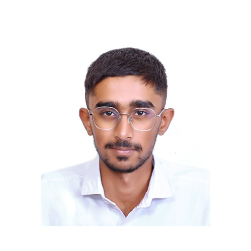

Prathamesh Chavan

Summary
Enthusiastic Full Stack Developer eager to contribute to team success
through hard work, attention to detail and excellent organizational skills.
A clear understanding of Concepts and training in Frontend and Backend
Technologies. Motivated to learn, grow and excel in trending Technology.
Education
- 2019-2023 - D Y Patil Institute of Engineering & Technology
B.E. Computer Engineering | CGPA - 7.8 / 10
- 2017-2019 - Shri Pramod Patil (SPPAC) Jr. College, Nashik
11th - 12th | MSBSHSE | Percentage - 70.46/100
- 2017 - New Era English School, Nashik
10th | MSBSHSE | Percentage - 86.60/100
Work Experience
- Volunteer - The Pillar Foundation | Nashik
2020 - present
- In charge of arranging all the goods required for donation or Prize.
- Volunteered in increasing the number of contributions to The Pillar
Foundation from several agencies
- Volunteered in organising cricket
tournaments to raise funds
- Project Manager - Team Falcon | Pune
Oct, 2019 - Feb 2020
- Handled communication between College, Sponsors and team.
- Was responsible for the timely execution of the project.
- Was involved in strategic planning for the entire project.
Skills
- HTML
- CSS
- javaScript
- ReactJs
- Java
- Python
Awards and Certifications
- Best Volunteer Award - The Pillar Foundation
- Best Team manager for ATVC Competition - Team Falcon
Other
Hobbies
Contact Me